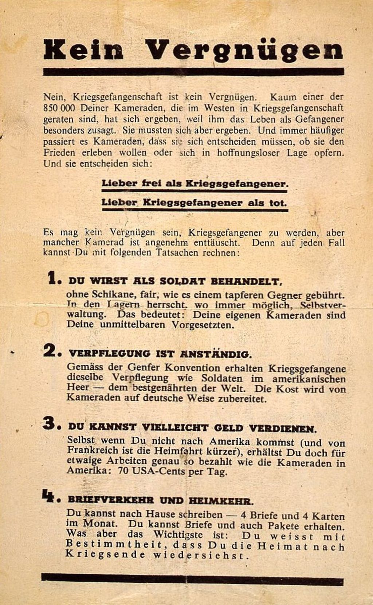

Frankreich, Russland und das Vereinigte Königreich
Thematik:
- Blutrünstige Darstellung der Deutschen
- Schuldzuweisungen
- Flugblatteinsatz
Propaganda anhand einiger konkreter Beispiele

Geschrieben auf einem Propagandaplakat aus Dublin wird der Leser gefragt, ob sein Zuhause es wert ist, verteidigt zu werden. Weiters darauf zu sehen ist ein deutscher Soldat, der Frau und Kinder bedroht. Also ist es die Pflicht des Vaters, seine Familie zu beschützen und sich rechtzeitig für den Abwehrkampf rekrutieren zu lassen.
Anders ein französisches Plakat, das an die erfolgreiche Defensive der letzten Jahre erinnert.
„Sie werden nicht durchkommen!“, steht darauf geschrieben. Symbolisiert wird das Ganze durch einen entstellten Soldaten mit Bandagen und zerrissener Uniform, stehend in einer verwüsteten Landschaft. Gelbliche Schwaden stellen das Kampfgas dar. Weiters ruft der Soldat auf, ebenfalls standzuhalten und sich vor der Heuchelei der Deutschen zu hüten.
Ein englisches Flugblatt Anfang 1917 ruft die deutschen Soldaten auf, sie sollen sich den Engländern ergeben, so wie es 50.000 ihrer Kameraden bereits getan haben sollen. In England würden sie in Wohlstand leben, was die Offiziere ihnen über die Engländer sagen, wäre gelogen. Wenn sie wollen würden, dass der Krieg bald zu Ende sei, sollen sie sich den Engländern ergeben.

In einem Flugblatt kurz vor Kriegsende schreibt England an die Bayern, sie würden von den „Preußen“ ausgenützt und geopfert werden. Sie würden dafür sorgen, dass die bittersten Kämpfe und größten Verluste den Bayern zu Teil werden würden.
Ähnlich hier: Die Franzosen schreiben in einem Flugblatt im April 1918 an die Elsass-Lothringer, dass die Deutschen sie nur ausnützen würden und sie schnell nach Frankreich gehen sollen, so wie es schon tausende Elsass-Lothringer gemacht hätten. Sie würden dort als vollwertige Franzosen behandelt werden.
Ein weiteres französisches Flugblatt im September 1918 ruft die deutschen Soldaten zur Gehorsamsverweigerung auf. Sie sollen ihre Offiziere erschießen und die Fronten wechseln, um so den Krieg zu verkürzen.